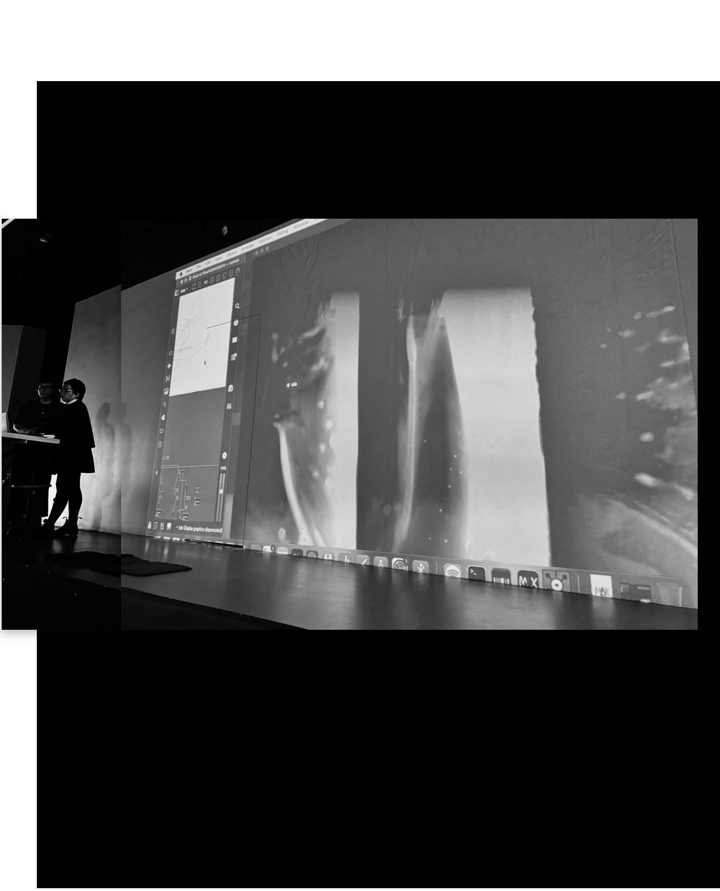
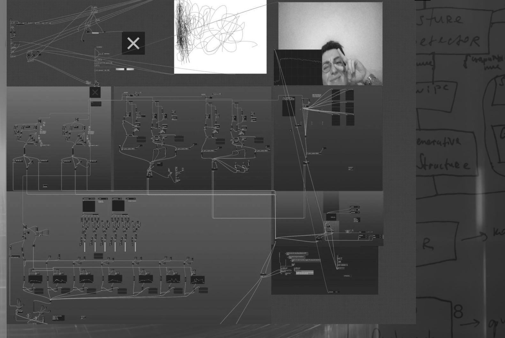

Art & scienceArt & science
Touch Me {Maybe}Touch Me {Maybe}
A virtual haptic-audio system based on the neuroscience of multisensory integration. nika sür-mä × Lera Juffer, AIR ITMO, 2025.Виртуальная гаптическо-звуковая система, основанная на нейронауке мультисенсорной интеграции. nika sür-mä × Lera Juffer, AIR ITMO, 2025.

Touch Me {Maybe} uses the neuroscientific principles of multisensory integration to create an interactive digital space where virtual touch and sound merge into a seamless, unified sensory experience.
Touch Me {Maybe} использует нейронаучные принципы мультисенсорной интеграции, чтобы создать интерактивное цифровое пространство, где виртуальное прикосновение и звук сливаются в единый сенсорный опыт.
System architecture.
Архитектура системы.
- Input — gesture: position, speed, type.
- Reliability assessment — the system analyses the smoothness and consistency of movement.
- Processing — it evaluates synchrony, reliability and user history.
- Output — adaptive sound synthesis across five gesture-based channels in MAX/MSP, with a real-time representation in TouchDesigner.
- Вход — жест: положение, скорость, тип.
- Оценка надёжности — система анализирует плавность и согласованность движения.
- Обработка — оцениваются синхронность, надёжность и история пользователя.
- Выход — адаптивный синтез звука по пяти жестовым каналам в MAX/MSP и реалтайм-репрезентация в TouchDesigner.
The goal is a realistic feedback loop between movement and sound. Touch Me {Maybe} is not just an audiovisual tool but an experimental model of how the brain learns to bind action and sound into a single stream of perception — a concept that could also inspire a new way of training AI-based agents.
Цель — реалистичная петля обратной связи между движением и звуком. Touch Me {Maybe} — не просто аудиовизуальный инструмент, а экспериментальная модель того, как мозг учится связывать действие и звук в единый поток восприятия — концепция, которая может подсказать и новый способ обучения ИИ-агентов.
ImagesИзображения
